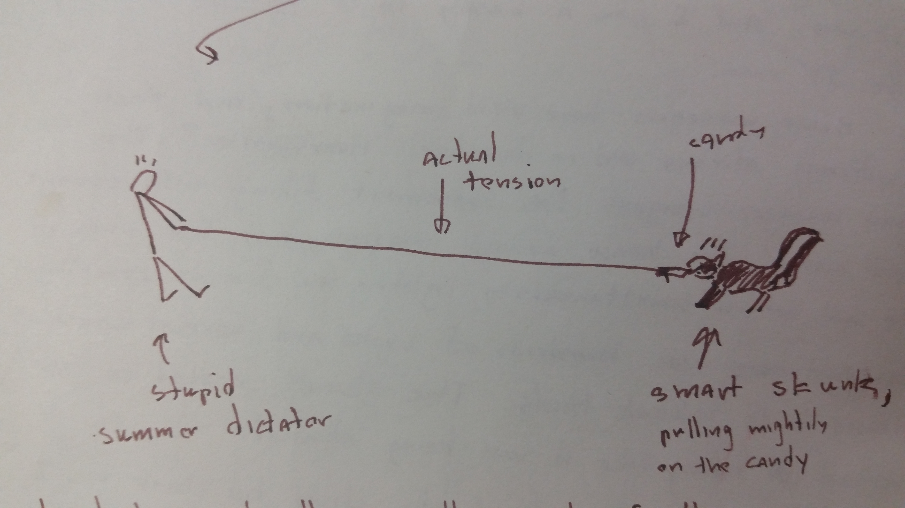

pika once had three rules:
These rules were abolished in favor of the rule that pika has no rules. Of course, this is more of a philosophy than a hard and fast rule, not to mention that pika doesn't do a very good job of even being philosophically true to this philosophy.
There's a disputed fourth rule: No going down the fire pole in the rain. This has been empirically tested and confirmed to be a very bad idea. Turns out our fire pole is very tall and friction-dependent.
Once upon a time, Daniel Parker '15 decided to make dulce de leche. This process involved simmering a closed can of condensed milk in boiling water, which he did. He and other pikans then presumably proceeded to do normal everyday pikan things while the can simmered. They were chatting idly when interrupted by a massive explosion. The can had evidently gotten too hot and expanded. The lid of the pot was across the room and "there was condensed milk and can shrapnel on every single wall". No one was hurt, but this goes down in history as one of pika's most potentially deadly kitchen debacles.
The official recreational activity ("sport") of pika is shoeblade. Many a pikan has entered the murph on a warm summer night to engage in a hearty round of shoeblade with his/her fellow housemates. The official beverage of shoeblade players is the bittermelon smoothie.
The goal of shoeblade is to put as many shoes as possible on the six blades of the ceiling fan in the Murph using a firestaff. Players must remain seated in one of the couches and may only use a firestaff to lift shoes from ground level to ceiling-fan level.
The illustrious evolution of shoeblade into its present form has lead to a vast lexicon of shoeblade-specific terminology. A brief glossary follows:
rotor - An extremely difficult move in which a player shoes the blade by rotating the fan such that it knocks the shoe off the firestaff, landing on the blade. Should only be attempted by technically-skilled players.
blender - A failed attempt to pull a rotor.
cranking - Slang for playing shoeblade. A traditional cheer by shoeblade spectators is, "Crank it!" (often yelled when the blade is about to be shod).
inverse shoeblade - Removing shoes from the blade using a firestaff.
the Brian Hepler - Removing shoes from the blade using one's arms.
the Great Migration - Accidentally knocking off all the shoes already on the fan while playing shoeblade.
the Shoeblade Blues - The official anthem of shoeblade. Lyrics: I went down to the river / got down on my knees / and then I played shoeblade.
(Story (including picture) copied verbatim from a 2011 Murph Book entry by Marc Rios, pika alum.)
It was the height of summer. I was the summer dictator. I was nocturnal at the time--I enjoyed reading in the basement when it was quiet. This time I was reading at 4:30am in the TV room, with the door propped open.
I heard a rustling behind me, and looked to see who it was. And I saw a bushy tailed skunk walk into the TV room.
House managers have vivid imaginations, and their daydreams always end in disaster. Hear water? The house manager imagines the basement filling with sewage. Smell smoke? The house manager imagines that the wires in the wall are all simultaneously lighting on fire or something. My nightmare was hundreds of books and several couches doused with skunk thiols. The skunk needed to leave without feeling like it was being attacked.
I left the room and stupidly closed the skunk in. I went to fetch Caveman Sam Coradetti so he could help me. We hatched an awesome plan: tie a shoelace around a candy bar and lure the critter out with chocolate!
What could go wrong?
So I tried to lure it out. And the skunk decided that he wasn't going to follow the candy like a dope--he was going to snatch the chocolate and play tug of war!

I tried to yank the critter out of the room, forgetting that my reward for success would be a face full of stinky fluids shot from the scent glands of a skunk out of its ass. This may have been one of the few times in my life that I was blinded by the adrenaline rush of competition.
The skunk won. As it at its reward, I regrouped with Sam. "I have an idea." Sam, who was too tired to tell me that my last idea sucked, listened.
"We should block off the stairs. And then I'll have a staring match with it."
"Ok." Sam was definitely just saying this so he could watch me get nailed.
There was some reason behind this plan. I thought the skunk reminded me of my deceased pet ferret. Ferrets get nervous when you stare at them. And then they leave.
So I stood in the center of the TV room and stared at the skunk. I watched it for five minutes before it got spooked and left for the back door.
Victory! HA! Take that, skunk!
Once, Adam Rodriguez '15 brought a somewhat conservative friend to pika. This happened to be during a "naked baking" event, and the friend walked into the house to find a bunch of pikans in various states of undress chilling in the Murph, watching TV shows while they waited for their cookies to be done. She freaked out and Adam took her to the back porch to console her and explain clothing-optionality. Just as he got her calmed down, Lauren Hom came flying down the firepole at them--topless.
Lilah enjoys biting the heads off animals. Once, Ben T. '13 found a headless squirrel outside the back door. He put on gloves, obtained two Ziploc bags, and double-bagged the squirrel. He then removed the gloves and excitedly ran throughout the house, showing off his new friend. His human friends watched with mixed amusement and disgust. Eventually, saying "Look what I found!" and shaking the bag to make the squirrel dance got kind of old, so Ben taped up the bag in the dining room to be prominently displayed with our collection of funny news articles. It stayed there for what was probably no more than a day, but seemed like a very, very long time to look at a headless dead squirrel.
Sometimes Murph Books (pika's community sketchbooks, which are kept in public spaces and filled with random anecdotes, drawings, feelings, quotes, whatever) get absorbed somehow into the pika house. This happened with two successive books in Spring '15; the books have not yet been found. There's also a note in a book from 2010: "Lost Murph Book Count: 2". Prophetic?